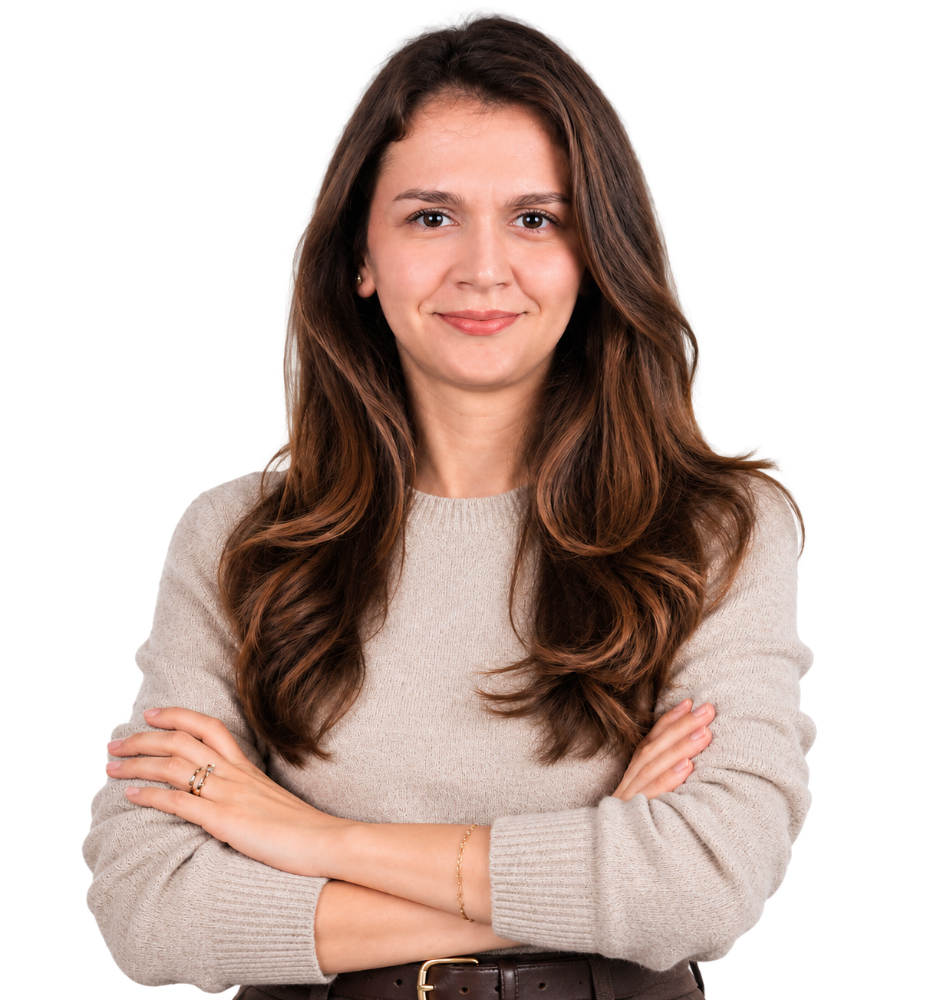

◎
Uluslararası Ticaret
Uluslararası ticaret politikaları, küresel değer zincirleri, ekonomik büyüme ve sürdürülebilir ticaret uygulamaları.
Yayınları İncele →Küresel ticaretin dönüşümünü anlamak.
Uluslararası ticaretin ekonomik büyüme, yapay zekâ ve döngüsel ekonomiyle etkileşimini; sürdürülebilirlik ve teknolojik dönüşüm perspektifinden araştırıyorum.

Ekonomik büyüme, teknolojik dönüşüm ve sürdürülebilir bir gelecek üzerine.
Beşiktaş Anadolu Lisesi'nden mezun olduktan sonra lisans eğitimimi İstanbul Ticaret Üniversitesi İngilizce İktisat Bölümünde bölüm ikincisi olarak tamamladım. Ekonomik sistemlerin işleyişine, uluslararası piyasalara ve küresel ekonomik gelişmelere duyduğum ilgi doğrultusunda akademik eğitimime aynı üniversitede devam ettim. Uluslararası Ticaret alanında yüksek lisans derecemi aldıktan sonra doktora eğitimimi “Uluslararası Ticaret ve Büyüme İlişkisinin Döngüsel Ekonomi Bağlamında İncelenmesi” başlıklı tezimle tamamladım.
Akademik çalışmalarımın odağında uluslararası ticaret, ekonomik büyüme, döngüsel ekonomi, sürdürülebilir kalkınma, teknolojik dönüşüm ve rekabet gücü arasındaki çok boyutlu ilişkiler yer almaktadır. Küresel ticaretin değişen dinamiklerini yalnızca ekonomik göstergeler üzerinden değil, çevresel sürdürülebilirlik, kaynak verimliliği ve teknolojik gelişmeler çerçevesinde değerlendirmeyi önemsiyorum.
Araştırmalarımda özellikle yapay zekânın uluslararası ticarete etkileri, inovasyon ve teknoloji odaklı rekabet gücü, ticaret açıklığı, yeşil dönüşüm ve döngüsel ekonomi uygulamaları üzerine yoğunlaşıyorum. Yapay zekâ ve dijitalleşmenin küresel değer zincirlerini nasıl dönüştürdüğü, teknolojik gelişmelerin ülkelerin uluslararası rekabet konumlarını nasıl etkilediği ve ekonomik büyümenin çevresel sürdürülebilirlikle nasıl uyumlu hâle getirilebileceği temel araştırma sorularım arasında yer almaktadır.
Bilimsel çalışmalarımda nicel araştırma yöntemlerinden, ekonometrik analizlerden ve bibliyometrik yaklaşımlardan yararlanırken, işletmelerin sürdürülebilirlik odaklı karar alma süreçlerini anlamaya yönelik nitel araştırmalarla da ilgileniyorum. Özellikle yeşil tedarik zinciri yönetimi, sürdürülebilir üretim, çevresel düzenlemeler ve işletmelerin maliyet ile sürdürülebilirlik hedefleri arasında kurdukları denge güncel araştırma ilgi alanlarımı oluşturmaktadır.
Akademik araştırmalarımın yanı sıra İstanbul Ticaret Üniversitesinde araştırma görevlisi olarak görev aldım ve eğitim-öğretim faaliyetlerinde bulundum. Uluslararası ticaret, ticaret politikaları ve sürdürülebilirlik eksenindeki akademik çalışmalarımda teorik bilgiyi güncel ekonomik gelişmelerle ilişkilendiren, analitik düşünmeyi ve disiplinler arası yaklaşımı önceleyen bir anlayışı benimsiyorum.
Uluslararası ticaret politikaları, küresel değer zincirleri, ekonomik büyüme ve sürdürülebilir ticaret uygulamaları.
Yayınları İncele →Kaynak verimliliği, döngüsel iş modelleri, sürdürülebilir üretim ve yeşil dönüşüm.
Yayınları İncele →Çevresel sürdürülebilirlik, kapsayıcı ekonomik büyüme ve yeşil tedarik zinciri yönetimi.
Yayınları İncele →
Daha döngüsel,
kapsayıcı ve
sürdürülebilir
bir küresel ekonomi.
Uluslararası ticaret, döngüsel ekonomi, sürdürülebilir kalkınma, rekabet gücü ve teknolojik dönüşüm alanlarındaki akademik çalışmalarım.
Uluslararası Ticaret
Sürdürülebilir Kalkınma
Döngüsel Ekonomi
Yeşil Tedarik Zinciri Yönetimi